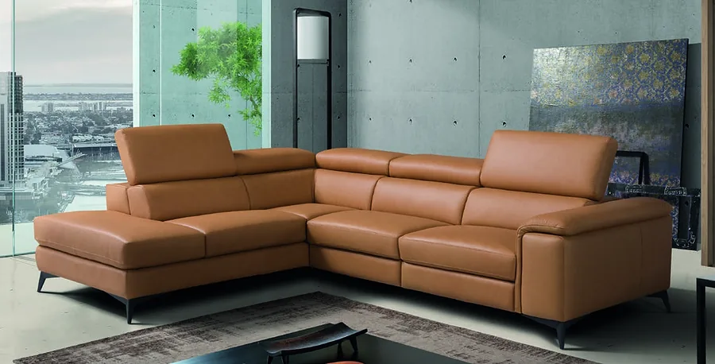

Charleroi et l’ouest de l’agglomération
Votre magasin de meubles près de Charleroi.
À vingt minutes de Charleroi. Notre adresse le dit : le magasin est au bord de la N90, la route de Charleroi, à Leval-Trahegnies. Depuis Charleroi, on y vient presque en ligne droite, par Fontaine-l’Évêque et Anderlues.
- À 20 km du centre de Charleroi
- Au bord de la N90
- Parking facile d’accès
Pour venir
Depuis Charleroi.
-
Le trajet
Comptez environ 20 km et un peu plus de 20 minutes depuis le centre de Charleroi, selon la circulation, par la N90 : Marchienne-au-Pont, Fontaine-l’Évêque, Anderlues, puis Leval-Trahegnies. Le magasin est au bord de la route. Depuis Marchienne-au-Pont ou Montigny-le-Tilleul, comptez environ 17 min ; depuis Fontaine-l’Évêque, environ 12 min.
Ouvrir l’itinéraire -
Sur place
Le parking est facile d’accès. Vous venez quand vous voulez pendant les heures d’ouverture, avec ou sans rendez-vous, et vous prenez le temps d’essayer.
Horaires et contact -
La livraison
Nous livrons et installons nous-mêmes à Charleroi et dans les communes voisines : Fontaine-l’Évêque, Montigny-le-Tilleul, Courcelles, Châtelet.
Au magasin
Ce que vous venez voir.
-

Salons et relax
Canapés et fauteuils relax italiens et européens, à essayer.
-

Tables et chaises
Tables en céramique, en bois, extensibles, et leurs chaises.
-

Cuisines
Des cuisines italiennes, dessinées avec vous au magasin.


Avant la visite
Comparer les tables extensibles.
-
Les mesures à comparer
Pour vérifier qu’une table vous convient, comparez ses dimensions, fermée puis ouverte. Pensez aussi à la place des chaises et au passage autour de la table.
Voir les tables extensibles en céramique
Vos questions
Avant de prendre la route.
Fony Meubles a-t-il un magasin à Charleroi ?
Non. Notre seul magasin est à Leval-Trahegnies, dans l’entité de Binche, à environ 20 km du centre de Charleroi, par la N90.
Livrez-vous à Charleroi ?
Oui. Nous livrons et installons nous-mêmes à Charleroi et dans les communes voisines, comme dans le reste du Hainaut et la province de Namur.
Combien de temps faut-il depuis Courcelles ou Gosselies ?
Comptez environ 21 min depuis Courcelles et 27 min depuis Gosselies, hors embouteillages.
Venez nous voir à Leval-Trahegnies.
Notre équipe vous accueille et vous conseille au magasin. Parking facile d’accès, avec ou sans rendez-vous.
- Lundi
- 13h30 – 18h30
- Mardi au samedi
- 10h30 – 18h30
- Dimanche
- Fermé
- Téléphone
- 064 46 07 72
- Livraison
- Par nos soins, dans le Hainaut (Binche, La Louvière, Mons, Charleroi…) et la province de Namur
Nous livrons aussi dans le nord de la France. Ailleurs, dont Bruxelles : sur demande.